În stînga este slide-ul din curs, în dreapta aceeași figură, calculată în browser din aceleași date. Butonul ▶ modifică parametrul pas cu pas.
Prețuri și randamente · Distribuție și cozi · Dependența și mecanismele ei · Persistența și limitele inferenței · Volatilitatea din deschidere, maxim, minim și închidere · Randament ajustat la risc și drawdown · Studiu de caz: volatilitatea depinde (în mare parte) de traiectorie
Prețuri și randamente
Cinci piețe: prețuri și randamente logaritmice zilnice
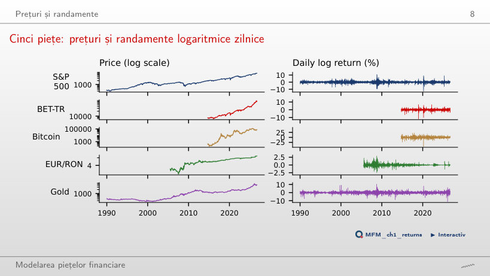
Răspuns
În 1,4% din zile, față de 25,5% din zile pentru S&P 500 și 60,8% pentru Bitcoin. Cea mai slabă zi a Bitcoin, 12 martie 2020, are randamentul logaritmic −46,5%: prețul se înmulțește cu e−0,465, deci scade cu 37,2%.
Distribuție și cozi
Faptul 2, cozi groase: histograme și grafice cuantilă–cuantilă (QQ plot-uri)
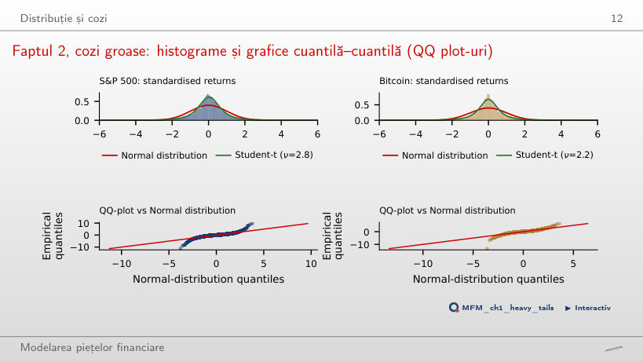
Răspuns
Nu neapărat. Histograma este dominată de centrul distribuției, unde se află aproape toate zilele. Cozile se judecă separat, pe QQ plot și cu estimatorul Hill: pentru S&P 500, 0,67% dintre zile au |z| > 4, față de 0,006% sub distribuția Normală, iar tail index-ul estimat este α̂ = 3,07.
Hill plot-urile pentru cele cinci piețe
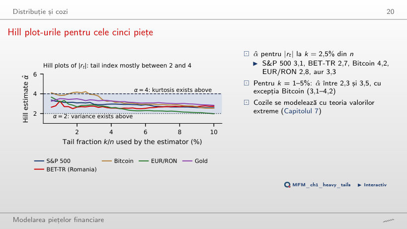
Răspuns
Cel mai probabil nu. La k = 2,5% din n, α = 4 este în afara tuturor intervalelor de 95%, cu excepția celui pentru Bitcoin (α̂ = 4,22). Concluzia rămîne cu erorile standard bootstrap pe blocuri, de 1,1–1,6 ori mai mari decît cele i.i.d.
Faptul 3: asimetria cîștig/pierdere în date
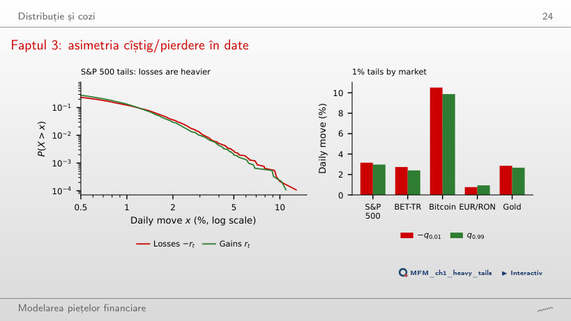
Răspuns
Nu. Δ = 3,15 − 2,97 = 0,18 pp, iar intervalul de încredere de 95% prin bootstrap pe blocuri, [−0,12; 0,49] pp, conține 0. Singura diferență semnificativă este pe EUR/RON, cu semn opus: Δ = −0,17 pp, cu intervalul [−0,35; −0,08] pp.
Dependența și mecanismele ei
Faptele 1 și 6: randamente necorelate, dar dependente
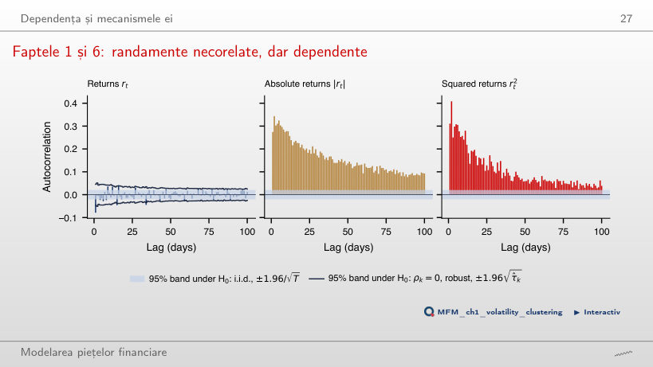
Răspuns
20 ies din banda i.i.d. și doar 7 din banda robustă; la 5%, circa 5 din 100 ies întîmplător. Autocorelațiile lui |rt| și rt2 sînt pozitive la toate cele 100 de laguri, deci randamentele sînt necorelate, dar nu independente.
Faptul 5: intermitența în date
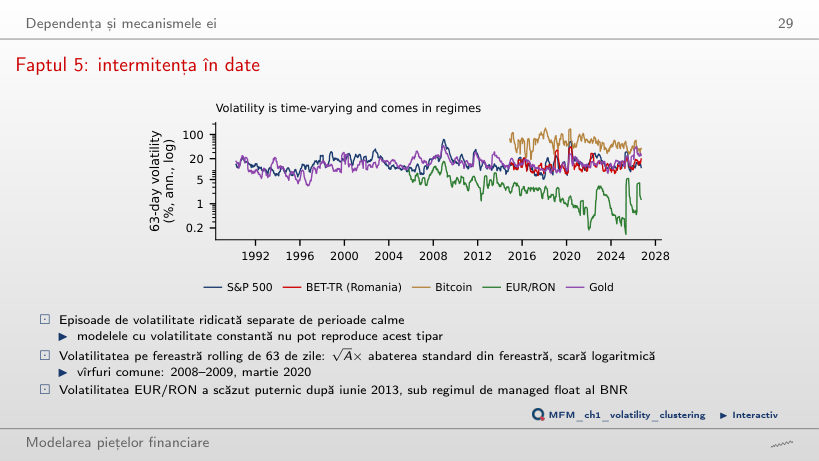
Răspuns
A scăzut puternic, sub regimul de managed float al BNR. Media volatilității pe 63 de zile scade de la 5,8% înainte de iulie 2013 la 2,0% după; testul de ruptură în varianță datează schimbarea la 27 iunie 2013.
Faptul 4: gaussianitate prin agregare
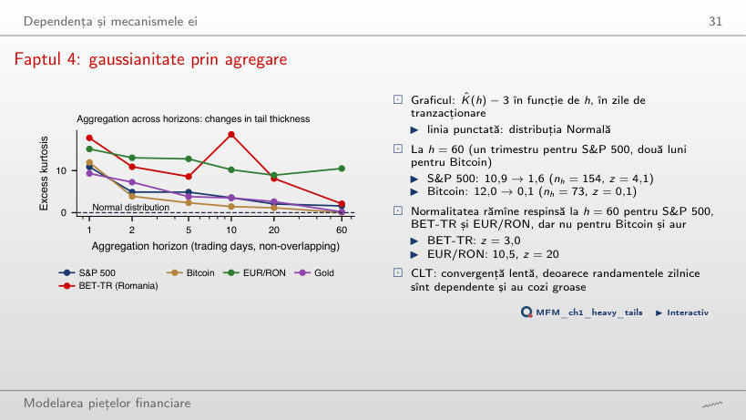
Răspuns
Doar pe unele piețe. La h = 60, excesul de kurtosis scade de la 10,9 la 1,6 pentru S&P 500 (nh = 154, z = 4,1) și de la 12,0 la 0,1 pentru Bitcoin (z = 0,1). Normalitatea rămîne respinsă pentru S&P 500, BET-TR (z = 3,0) și EUR/RON (z = 20).
Faptul 9: leverage effect
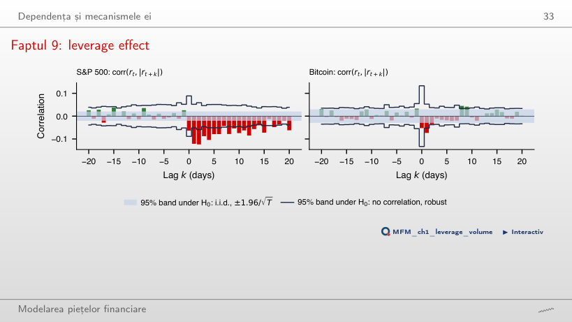
Răspuns
Da. L(1) = −0,12, cu z = −4,6 calculat cu eroarea standard robustă, iar la k = 10 este încă −0,07. După cele mai slabe 5% dintre zile, |rt+1| are media 1,40%, după cele mai bune 5% doar 1,04%. Pe EUR/RON efectul este inversat: L(1) = +0,10 (z = 2,7).
Faptul 10: volumul și volatilitatea evoluează împreună
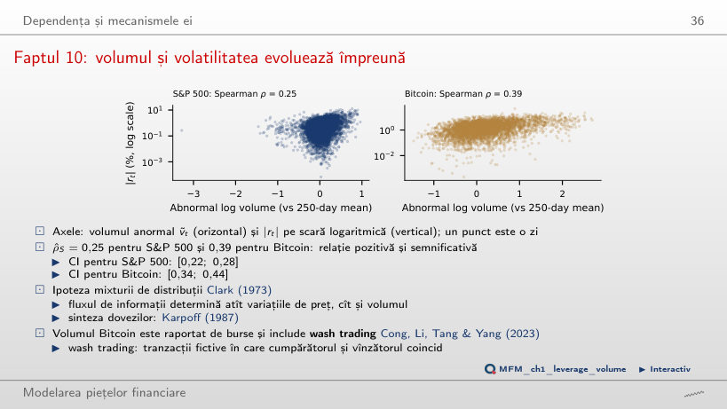
Răspuns
Da. Corelația Spearman dintre volumul anormal și |rt| este 0,25 pentru S&P 500, cu intervalul [0,22; 0,28], și 0,39 pentru Bitcoin, cu intervalul [0,34; 0,44]. Pentru Bitcoin, volumul raportat de burse include wash trading.
Persistența și limitele inferenței
Faptul 8: scăderea lentă a ACF pentru |rₜ|
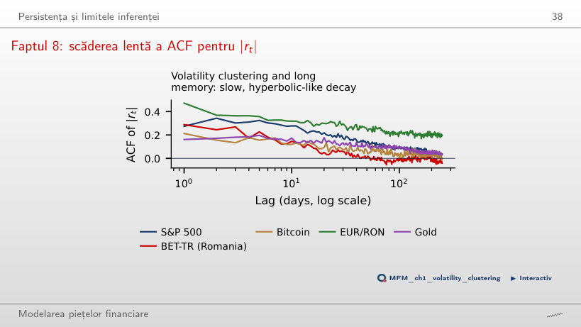
Răspuns
Nu. Pentru S&P 500, ACF este 0,27 la lagul 1, 0,22 la lagul 20 și încă 0,09 la lagul 100, mult peste o scădere exponențială. Rupturile structurale ale nivelului volatilității produc însă același tipar; estimatorii semiparametrici dau d̂ între 0,35 și 0,50.
Efectul Taylor
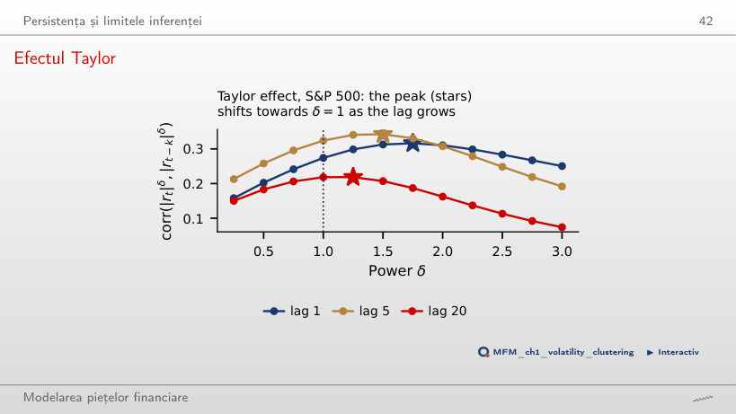
Răspuns
Sub 2 la fiecare lag: δ = 1,75 la lagul 1, 1,5 la lagul 5 și 1,25 la lagul 20. Maximul se apropie de 1 cînd lagul crește, dar la lagul 1 este mai aproape de 2 decît de 1. Poziția maximului nu are eroare standard, deci comparația cu δ = 1 este descriptivă.
Volatilitatea din deschidere, maxim, minim și închidere
Deschiderea, maximul, minimul și închiderea (OHLC) unei zile
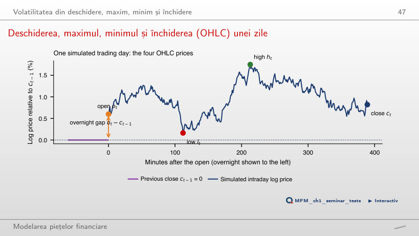
Răspuns
Da. Randamentul din timpul zilei este zero, dar range-ul ht − lt rămîne mare dacă prețul a oscilat mult. Pentru o mișcare browniană, E[(ht − lt)2] = 4 ln 2 · σ2, iar estimatorul Parkinson are o eficiență de circa 5 față de close-to-close.
Estimatorii de volatilitate aplicați pe S&P 500
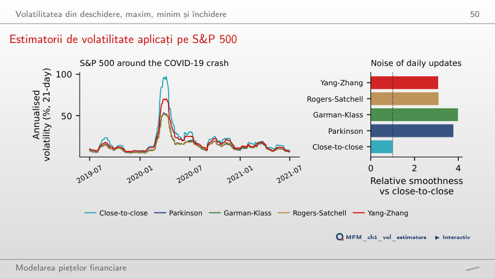
Răspuns
Pentru că nu surprind salturile de peste noapte. Pe ferestre de 21 de zile, 2008–2026, media este 16,4% pentru close-to-close, 13,9% pentru Yang–Zhang, 13,0% pentru Parkinson, 12,4% pentru Garman–Klass și 12,3% pentru Rogers–Satchell. Seriile din range sînt de 3–4 ori mai netede, dar asta nu dovedește eficiența.
Randament ajustat la risc și drawdown
Drawdown-uri pe piețe
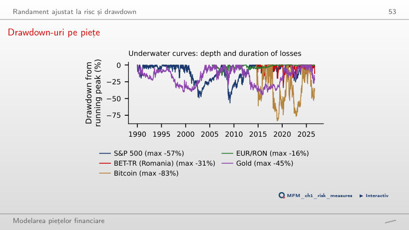
Răspuns
+131%. Indicele a scăzut de la 1 565,15 (9 octombrie 2007) la 676,53 (9 martie 2009), adică cu 56,8%, iar după o scădere x revenirea la vîrf cere o creștere de 1/(1 − x) − 1.
Risc și randament pe piețe
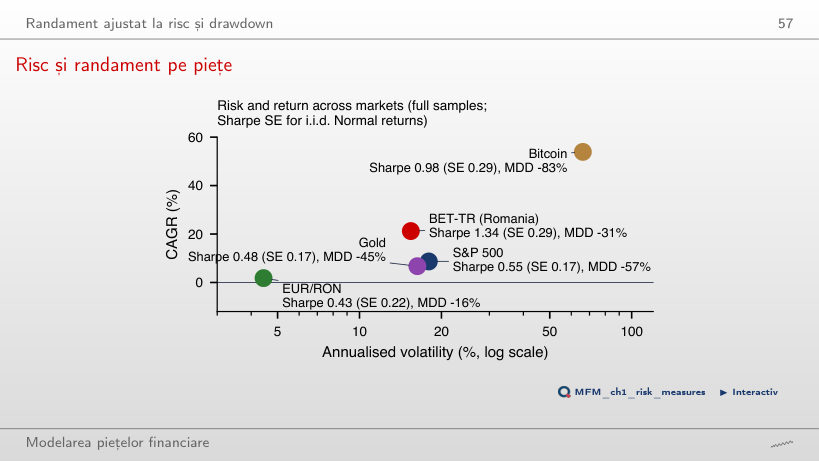
Răspuns
Nu. Perioadele diferă, iar cu rf = 0 raportul Sharpe al BET-TR (1,34, SE 0,29) este supraestimat: indicele include dividendele și este în lei, cu dobînzi mult peste cele în USD. Cu un început comun în 2015, raportul Sharpe este 1,38 pentru BET-TR, 1,05 pentru Bitcoin și 0,72 pentru S&P 500, dar erorile standard sînt de circa 0,3, deci ordinea nu este sigură.
Studiu de caz: volatilitatea depinde (în mare parte) de traiectorie
Studiu de caz (3/4): VIX observat și VIX estimat din randamentele S&P 500
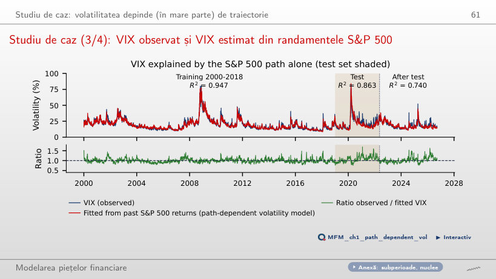
Răspuns
Pe datele cursului, R2 = 0,947 la antrenare (2000–2018) și 0,863 la test (2019 – mai 2022), cu RMSE 0,020 și 0,034. Ultimele 5 zile concentrează 20% din ponderea nucleului volatilității, iar lagurile de peste 250 de zile încă 10%.
Prețuri de închidere zilnice pînă la 18 septembrie 2026: S&P 500, BET-TR, Bitcoin, aur spot și VIX din EODHD; EUR/RON: cursul de referință BNR. Randamente logaritmice, fiecare serie pe propriul calendar.